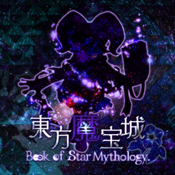

- Welcome to Touhou Wiki!
- Please register to edit. For assistance, check in with our Discord server or IRC channel.
Book of Star Mythology
Book of Star Mythology | |
|---|---|
|
 | |
| Developer |
Mace's Secret Base/raichu |
| Publisher |
Mace's Secret Base |
| Released |
v0.01: November 29, 2015 (Autumn Reitaisai) |
| Genre |
Vertical Danmaku Shooting Game |
| Gameplay |
Single-Player Story Mode |
| Official Site | |
Touhou
The latest version of the game, 1.10, features a six stage main game plus an Extra Stage.
Gameplay[edit]
The gameplay of Book of Star Mythology revolves around collecting star items dropped from enemies, where more can be obtained by attacking enemies at close range. Collecting star items increases the Magnitude gauge, which leads to higher point multipliers. Star items do many other things: they factor in gaining resource pieces, they increase the point item value, and gathering enough in a stage will trigger the stage boss's "Lastword" spell card.
This game also uses the chapter system of Legacy of Lunatic Kingdom, and is also divided into two modes: "Legendary Hero Mode" with infinite lives, and the regular "Legacy Mode". Legendary Hero Mode is different from Pointdevice Mode in that it ignores what chapter you're on; instead, you simply respawn where you died, either at that exact spot or at the bottom of the screen (depending on the setting in the Option menu).
Story[edit]
The story was written by Milka Oyasu (the writer for The Last Comer, Mystical Power Plant and Riverbed Soul Saver).
Music[edit]
Version 1.10 currently features 19 songs. These are all original compositions in a ZUN-like style, put together by an all-star cast.
External links[edit]
When downloading from Axfc, always watch out for NSFW ads.
- Original music album announcement
- v0.01 announcement: YouTube Niconico Douga
- v0.02 announcement: YouTube Niconico Douga
- v1.00 announcement: YouTube Niconico Douga
- v1.10 announcement: YouTube Niconico Douga